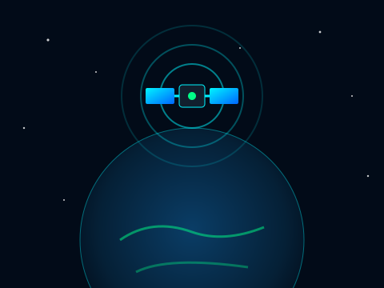
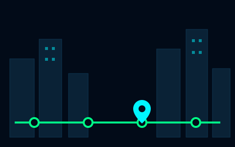
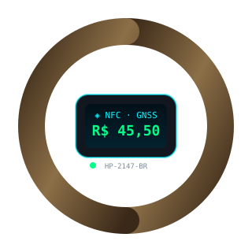

🛰️
GNSS
GPS, Galileo, GLONASS e BeiDou localizam a estação com precisão em metros.
HoloPass é a pulseira que paga a passagem por NFC e localiza você por satélite — sem celular.
Conhecer a solução
Manusear o celular em estações lotadas expõe o aparelho ao furto todos os dias.
Bilhetes e cartões físicos geram filas, perdas e fraudes — e excluem quem não usa apps.

Usamos posicionamento por satélite (GNSS) e NFC, com a fórmula de Haversine para distâncias reais.
GPS, Galileo, GLONASS e BeiDou localizam a estação com precisão em metros.
Pagamento por aproximação do pulso, sem cartão e sem celular.
Imagens do CBERS-4A e Amazonia-1 apontam áreas mal atendidas.
Arduino embarcado e app PWA que funciona offline.
Viajar sem expor o celular nas estações e nos veículos.
Funcionar para quem não tem smartphone ou tem dificuldade com apps.
Antecipar atrasos, sugerir rotas e reduzir filas e fraudes.
Trabalhadores e estudantes que usam metrô e trem todos os dias na cidade.
Idosos e pessoas com pouca familiaridade com aplicativos de transporte no celular.

Aproxime o pulso da catraca e siga viagem na hora.
A pulseira sabe sua estação e avisa a chegada.
Alertas de desembarque, lotação e melhor vagão.
Continua útil mesmo sem internet durante a viagem.
De manhã, você toca o pulso na catraca e a viagem começa sem fila.
No trajeto, a pulseira vibra ao chegar e mostra a rota menos lotada.